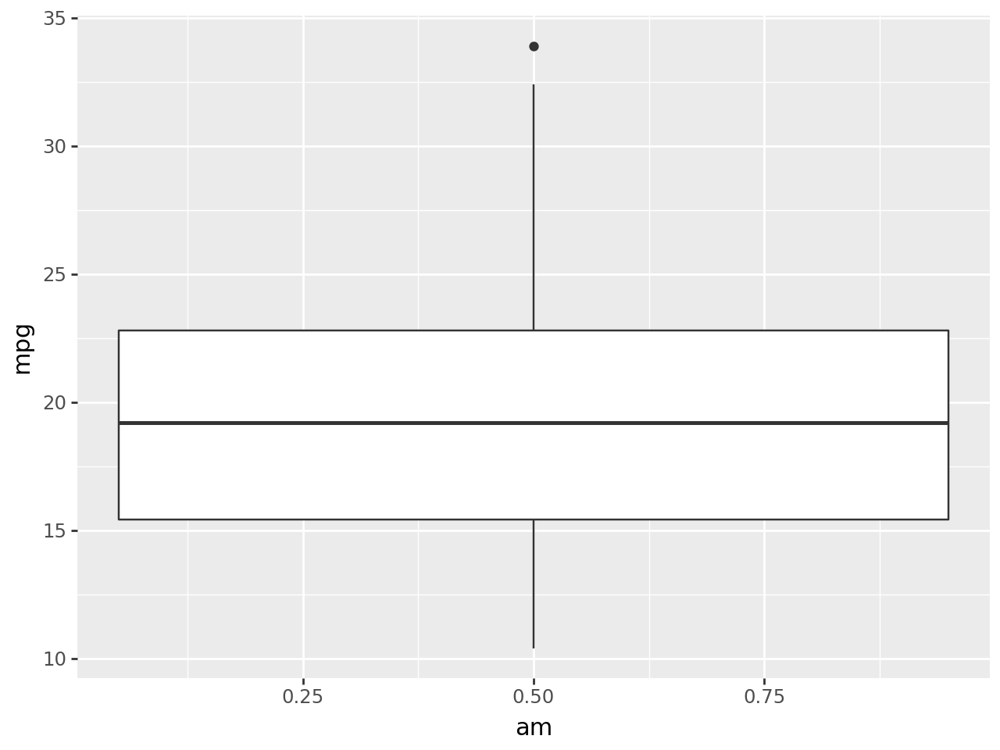
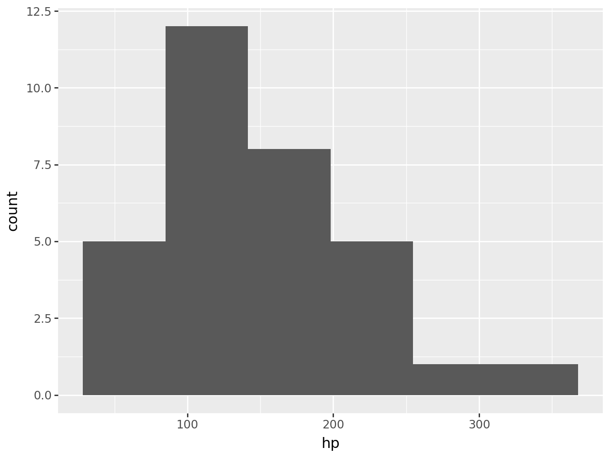
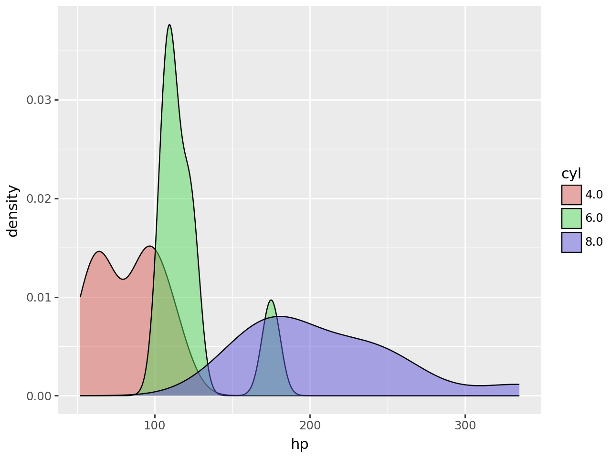
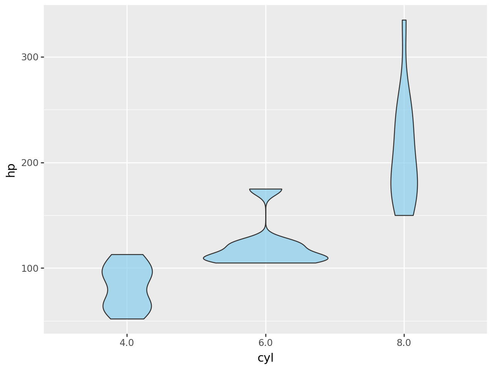
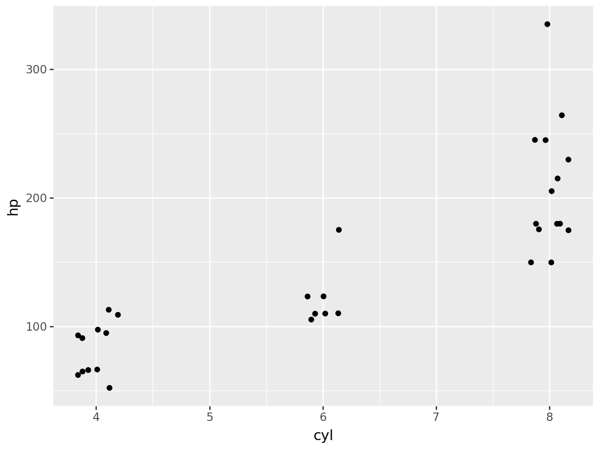

import statsmodels.api as sm
import pandas as pd
import plotnine as p9
from plotnine import *
mtcars = sm.datasets.get_rdataset("mtcars", "datasets", cache=True).data
df = pd.DataFrame(mtcars)Data Visualization Using plotnine
The Palmer Penguins dataset had a variety of column types with which to explore some nice visualizations. The mtcars dataset is another popular dataset for doing some simple data work, but does not contain the same types of variables.
Run the following code to load the mtcars dataset and explore the observations and variables contained within. To learn more about this dataset check out this site
df.info()<class 'pandas.core.frame.DataFrame'>
Index: 32 entries, Mazda RX4 to Volvo 142E
Data columns (total 11 columns):
# Column Non-Null Count Dtype
--- ------ -------------- -----
0 mpg 32 non-null float64
1 cyl 32 non-null int64
2 disp 32 non-null float64
3 hp 32 non-null int64
4 drat 32 non-null float64
5 wt 32 non-null float64
6 qsec 32 non-null float64
7 vs 32 non-null int64
8 am 32 non-null int64
9 gear 32 non-null int64
10 carb 32 non-null int64
dtypes: float64(5), int64(6)
memory usage: 3.0+ KBdf.head()| mpg | cyl | disp | hp | drat | wt | qsec | vs | am | gear | carb | |
|---|---|---|---|---|---|---|---|---|---|---|---|
| rownames | |||||||||||
| Mazda RX4 | 21.0 | 6 | 160.0 | 110 | 3.90 | 2.620 | 16.46 | 0 | 1 | 4 | 4 |
| Mazda RX4 Wag | 21.0 | 6 | 160.0 | 110 | 3.90 | 2.875 | 17.02 | 0 | 1 | 4 | 4 |
| Datsun 710 | 22.8 | 4 | 108.0 | 93 | 3.85 | 2.320 | 18.61 | 1 | 1 | 4 | 1 |
| Hornet 4 Drive | 21.4 | 6 | 258.0 | 110 | 3.08 | 3.215 | 19.44 | 1 | 0 | 3 | 1 |
| Hornet Sportabout | 18.7 | 8 | 360.0 | 175 | 3.15 | 3.440 | 17.02 | 0 | 0 | 3 | 2 |
The statement “the mtcars dataset does not contain the same types of variables as the penguins dataset” is a little true and a little false. There are no variables that contain text values, BUT there are variables that it makes sense to consider categorical variables. In most situations, it makes sense to treat the values of categorical variables as text values instead of numeric values.
Use the astype() method to convert the categorical variables of the mtcars (df) dataset to have text values in the code chunk below. We’ve done one for you!
df["am"] = df["am"].astype(str)
df["vs"] = df["vs"].astype(str)
df["gear"] = df["gear"].astype(str)
df["cyl"] = df["cyl"].astype(str)
# Convert the other variables belowdf.head()| mpg | cyl | disp | hp | drat | wt | qsec | vs | am | gear | carb | |
|---|---|---|---|---|---|---|---|---|---|---|---|
| rownames | |||||||||||
| Mazda RX4 | 21.0 | 6 | 160.0 | 110 | 3.90 | 2.620 | 16.46 | 0 | 1 | 4 | 4 |
| Mazda RX4 Wag | 21.0 | 6 | 160.0 | 110 | 3.90 | 2.875 | 17.02 | 0 | 1 | 4 | 4 |
| Datsun 710 | 22.8 | 4 | 108.0 | 93 | 3.85 | 2.320 | 18.61 | 1 | 1 | 4 | 1 |
| Hornet 4 Drive | 21.4 | 6 | 258.0 | 110 | 3.08 | 3.215 | 19.44 | 1 | 0 | 3 | 1 |
| Hornet Sportabout | 18.7 | 8 | 360.0 | 175 | 3.15 | 3.440 | 17.02 | 0 | 0 | 3 | 2 |
If you print out your new dataset, is it clear that the variables have been converted to text values? If so, how can you tell?
It should also be clear by how plotnine treats these variables.
- Create side-by-side boxplots of the
mpgvariable by the different values of theamvariable. What happens if you convert theamvariable back to float values and then try to create this same plot? Explain the differences between the two plots.
- The first box plot has the am variable treated as a categorical varaible and so it will show the value distributions in two seperate box plots. The latter however treats the am variable as a numeric value and pools all the data together in one boxplot to show the distribution.
- Create overlaid histograms of the
hpvariable for the different values of thecylvariable. What happens if you convert thecylvariable back to float values and then try to create this same plot? Explain the differences between the two plots.
- This is the same problem as before where the second plot treats cylinders as a continuos variable, not categorical, as a result we only get one histogram instead of it being split into three groups
# @title
# Create plot for (1) here
(ggplot(df,
aes(
x = "am",
y = "mpg",
fill = "am"
))
+ geom_boxplot()
)
df["am"] = df["am"].astype(float)
df.head()| mpg | cyl | disp | hp | drat | wt | qsec | vs | am | gear | carb | |
|---|---|---|---|---|---|---|---|---|---|---|---|
| rownames | |||||||||||
| Mazda RX4 | 21.0 | 6 | 160.0 | 110 | 3.90 | 2.620 | 16.46 | 0 | 1.0 | 4 | 4 |
| Mazda RX4 Wag | 21.0 | 6 | 160.0 | 110 | 3.90 | 2.875 | 17.02 | 0 | 1.0 | 4 | 4 |
| Datsun 710 | 22.8 | 4 | 108.0 | 93 | 3.85 | 2.320 | 18.61 | 1 | 1.0 | 4 | 1 |
| Hornet 4 Drive | 21.4 | 6 | 258.0 | 110 | 3.08 | 3.215 | 19.44 | 1 | 0.0 | 3 | 1 |
| Hornet Sportabout | 18.7 | 8 | 360.0 | 175 | 3.15 | 3.440 | 17.02 | 0 | 0.0 | 3 | 2 |
(ggplot(df,
aes(
x = "am",
y = "mpg",
fill = "am"
))
+ geom_boxplot()
)
# Create plot for (2) here
print(df.head())
(ggplot(df,
aes(
x = "hp",
fill = "cyl"
))
+ geom_histogram()
) mpg cyl disp hp drat wt qsec vs am gear carb
rownames
Mazda RX4 21.0 6 160.0 110 3.90 2.620 16.46 0 1.0 4 4
Mazda RX4 Wag 21.0 6 160.0 110 3.90 2.875 17.02 0 1.0 4 4
Datsun 710 22.8 4 108.0 93 3.85 2.320 18.61 1 1.0 4 1
Hornet 4 Drive 21.4 6 258.0 110 3.08 3.215 19.44 1 0.0 3 1
Hornet Sportabout 18.7 8 360.0 175 3.15 3.440 17.02 0 0.0 3 2/usr/local/lib/python3.12/dist-packages/plotnine/stats/stat_bin.py:109: PlotnineWarning: 'stat_bin()' using 'bins = 6'. Pick better value with 'binwidth'.
df["cyl"] = df["cyl"].astype(float)
df.head()| mpg | cyl | disp | hp | drat | wt | qsec | vs | am | gear | carb | |
|---|---|---|---|---|---|---|---|---|---|---|---|
| rownames | |||||||||||
| Mazda RX4 | 21.0 | 6.0 | 160.0 | 110 | 3.90 | 2.620 | 16.46 | 0 | 1.0 | 4 | 4 |
| Mazda RX4 Wag | 21.0 | 6.0 | 160.0 | 110 | 3.90 | 2.875 | 17.02 | 0 | 1.0 | 4 | 4 |
| Datsun 710 | 22.8 | 4.0 | 108.0 | 93 | 3.85 | 2.320 | 18.61 | 1 | 1.0 | 4 | 1 |
| Hornet 4 Drive | 21.4 | 6.0 | 258.0 | 110 | 3.08 | 3.215 | 19.44 | 1 | 0.0 | 3 | 1 |
| Hornet Sportabout | 18.7 | 8.0 | 360.0 | 175 | 3.15 | 3.440 | 17.02 | 0 | 0.0 | 3 | 2 |
(ggplot(df,
aes(
x = "hp",
fill = "cyl"
))
+ geom_histogram()
)/usr/local/lib/python3.12/dist-packages/plotnine/stats/stat_bin.py:109: PlotnineWarning: 'stat_bin()' using 'bins = 6'. Pick better value with 'binwidth'.
Some of these variables, like the cyl variable, have numeric values that actually make sense as numbers (i.e. the number of cylinders in the engine). However, it doesn’t make the most sense to “do math” with this type of variable (e.g. take averages and such) because there are so few different value this can take on AND they’re an explicit choice made by the car manufacturer. So, it makes more sense to treat the cyl variable as a categorical variable despite it having numeric values.
You will need to keep these kinds of nuances about data in mind as you work with an increasing variety and richness of data, and do more complex things with them.
Choose 3 new geometries from the data-to-viz website for graphs that you’d like to explore using the mtcars dataset, and then create those graphs!
df["cyl"] = df["cyl"].astype(str)# Create plot with first new geometry here
(ggplot(df,
aes(
x = "hp",
fill = "cyl"
))
+ geom_density(alpha = 0.5)
)
# Create plot with second new geometry here
(ggplot(df, aes(x="cyl", y="hp"))
+ geom_violin(fill="skyblue", alpha=0.7))
# Create plot with third new geometry here
(ggplot(mtcars, aes(x="cyl", y="hp"))
+ geom_jitter(width=0.2))